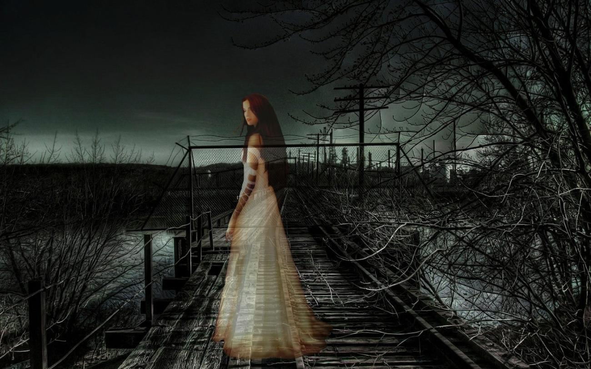
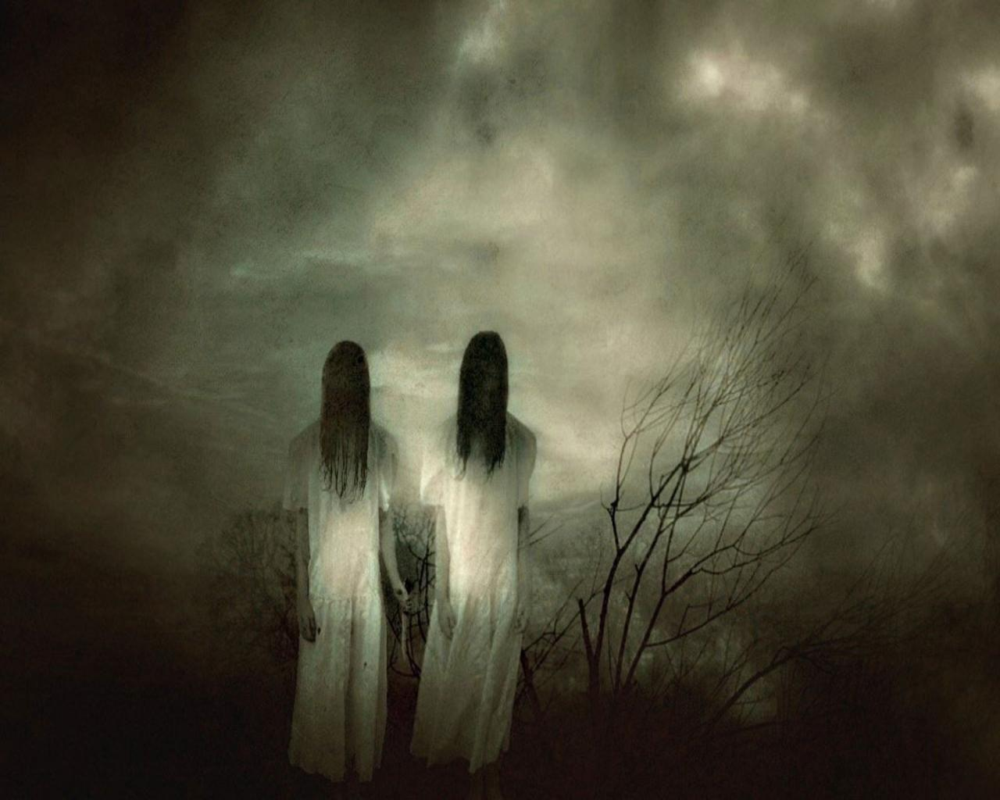

In the small town of Willowbrook, a haunting presence lingered among its quaint streets and charming old houses. Locals whispered tales of a ghost that haunted the town, their stories passing from one generation to the next. The ghost's origins were shrouded in mystery, and their name was long forgotten. But their presence was undeniable. It was said that the ghost roamed the town at night, their ethereal form drifting through the shadows. Some claimed to have seen a faint glow emanating from the specter, while others spoke of a chilling breeze that accompanied its presence. Fear and curiosity intertwined in the hearts of the townspeople, as they wondered about the ghost's purpose. One summer, a young woman named Emily arrived in Willowbrook. Drawn by the town's quaint charm, she had chosen it as the perfect place to settle down and begin a new chapter of her life. Unaware of the ghostly tales, Emily immersed herself in the community, making friends and acquaintances with the townspeople. As the days passed, whispers of the ghost reached Emily's ears. Intrigued, she delved deeper into the town's history, determined to uncover the truth behind the spectral figure. Her quest led her to the old town library, where she spent hours poring over ancient books and dusty archives. Through her research, Emily learned that the ghost had once been a resident of Willowbrook. Centuries ago, they had been falsely accused of a crime they didn't commit and were sentenced to an unjust death. It was the weight of this injustice that tied the ghost to the town, unable to find peace even in death. Driven by compassion, Emily resolved to help the restless spirit find closure. She sought out the town's oldest inhabitants, hoping they could shed more light on the ghost's story. With their guidance, she pieced together the fragments of a forgotten tragedy. Armed with newfound knowledge, Emily ventured to the spot where the ghost was said to appear most frequently. On a moonlit night, she stood beneath the boughs of an ancient oak tree, its branches reaching towards the heavens. She spoke softly into the night, her words carried by the wind. "I know your story," Emily whispered. "I know the injustice that befell you. But I am here to offer you solace, to bring the truth to light." As if in response, the air grew still, and the temperature dropped. Emily shivered but stood her ground, her determination unyielding. Moments passed like an eternity until a figure materialized before her—a translucent form, shimmering with an otherworldly light. The ghost regarded Emily with eyes filled with sorrow and longing. And in that moment, Emily understood. She extended her hand, a gesture of friendship and understanding. The ghost reached out, their spectral fingers intertwining with hers. In that simple touch, a wave of emotions surged through Emily. She felt the ghost's pain, their anguish, but also a glimmer of hope. The truth had been revealed, and now it was time to let go. The following night, the townspeople gathered beneath the same oak tree. Emily stood at the forefront, recounting the ghost's story and the injustice that had been done. The air was heavy with sorrow, yet also tinged with forgiveness and redemption.
The following night, the townspeople gathered beneath the same oak tree. Emily stood at the forefront, recounting the ghost's story and the injustice that had been done. The air was heavy with sorrow, yet also tinged with forgiveness and redemption.
With tear-filled eyes, Emily's voice carried through the crowd. "Let us remember the spirit that haunts our town not with fear, but with compassion. Let us honor their memory and seek justice in their name."
As the words faded into the night, a soft breeze rustled through the leaves, carrying away the ghost's pain. The spectral figure, now free from the burden of the past, ascended into the heavens, their ethereal form dissipating like mist